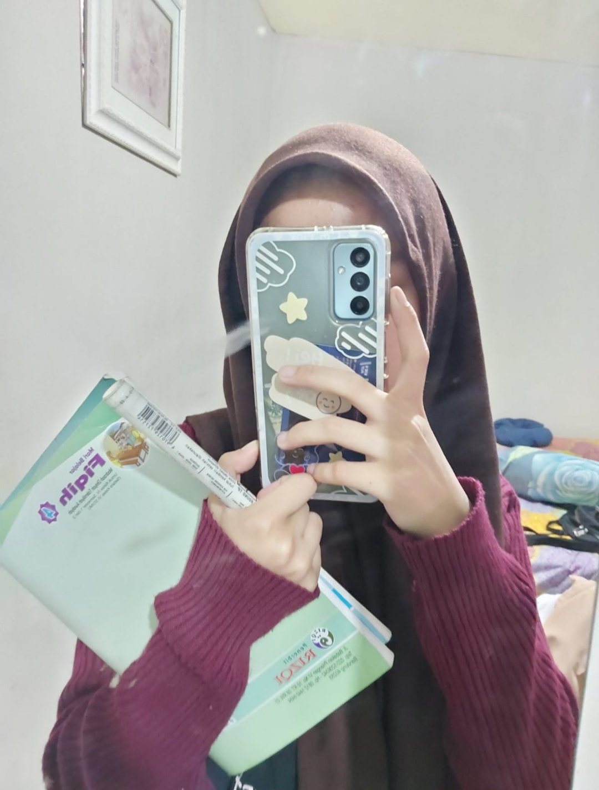
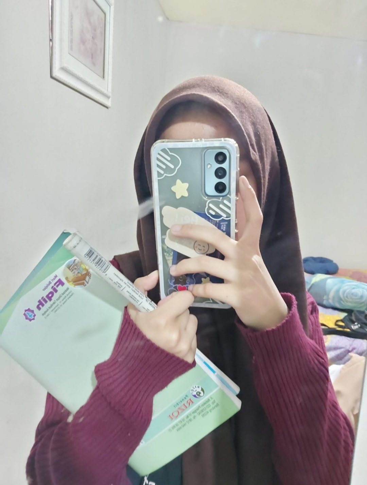

20 September 2022
.jpg)

Sebelum foto ini diambil sedikit cerita "Uji ma bila harusnya main berdua (maunya uji si hehe),tapii temennya bila mau ikut jadii kita main berempat sama temen bila dan uji meskipun ada sedikit drama. " Di foto ini uji sama bila berbincang bincang ngobrol sana sini sambil nungguin orang yang kita tunggu. Abistu kita Nonton film di foto ini kita mau nonton film "Miracle in cell no.7" singkat cerita karna bila harus pulang jam 5 jadi kita mau buru buru pulang, dijalan uji sama bila ngobrol ngobrol lagi seperti biasa tapii tiba tiba uji ma bila ngobrol serius yang ternyata obrolan itu te jadi terciptanya 20/09/22 atau jadi hari jadiannya kita gaess(meskipun kurang romantis karena di motor yaw). Abistu kita berkomitmen satu sama lain kita ngobrolin juga kita jadian itu bukan buat sekedar main main tapi kita harus grow up bareng bareng sampe kapanpun kalo diijinkan yapp. Gituu dee singkat cerita tentang kenapa ada 20/09/22.
Berhubung ini yang buat uji yaaa,jadii uji tu bersyukur banget punya bilaaa di idup uji tauu,bersyukur banget banget pokonya gaes, uji ga nyangka uji ma bila bisa sejauh inii,adanya bilaa di idup uji uji jadi bener bener jadi terarah punya tujuan jugaa meskipun kadang ga nurut ma bila,tapii kerasa banget kalo misal uji ga nurut sama bila tu uji jadi kaya orang ga bener aja rasanya, banyak banget yang udah kita laluin bareng bareng sampe sekarang,kita uda setaun lebih 4 bulan yaa banyak hal pait manis yang kita lewatin bareng bareng,banyak lika liku jugaa yang kita uda lewatin bareng bareng,semoga kita bisa terus bareng bareng sampe maut doang yang misahin kita yaa.
Pokonya uji mau bilang makasi banyak banyaaak banget buat bila uda mau jadi tempat uji cerita,uji ngeluh,uji ngadu wkwk,makasii juga buat sabarnya kamu ngadepin uji selama ini uji yang nyebelin yang ga nurut yaa, makasii buat semua perhatin perhatian bila buat uji makasii pokonya buat semuanya kamu uda jadi ruma ternyaman buat uji uda jadi orang yang uji gamau kamu ilang dari uji pokonya. Maaf juga kalo emang uji masi banyak kurangnya,masi belom bisa jadi yang kamu mau,maaf buat perlakuan uji ke kamu yang kadang bikin kamu bete badmood,maaf pokonya yaa. Uji sayang sama bila sayaang banget uji mau pokonya kita jangan ada yang sungkan satu sama lain kita saling terbukaa saling ungkapin apa yang kita rasain jangan sampee kita simpen sendiri apa yang kita rasain yaa, bila juga jangan ngerasa sendirian ada uji disini yang bakal berusaha jadi yang terbaik buat bila pokonya,jangan takut uji bakal tinggalin bila yaa uji gabakal ninggalin uji bakal sama bila seterusnya kedepannya pokonya, moga banyak hal hal baik yang dateng buat kita,sekali lagi uji sayang kamu.

 
